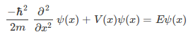

The Schrödinger equation describes the energy and time-evolution of a particle or system of particles, and is one of the fundamental building blocks of modern physics. In it’s general form, the (time-independent) Schrödinger equation looks like this:

There are relatively few situations in which the Schrödinger equation can be solved analytically, and numerical methods and approximations are one way around that analytical limitation. To demonstrate how this is possible and how a numerical solution works, what better way than to solve a system which can be solved analytically and comparing the results. Continue reading